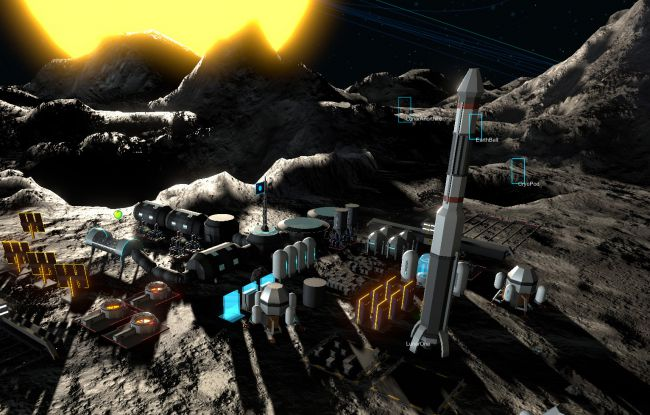
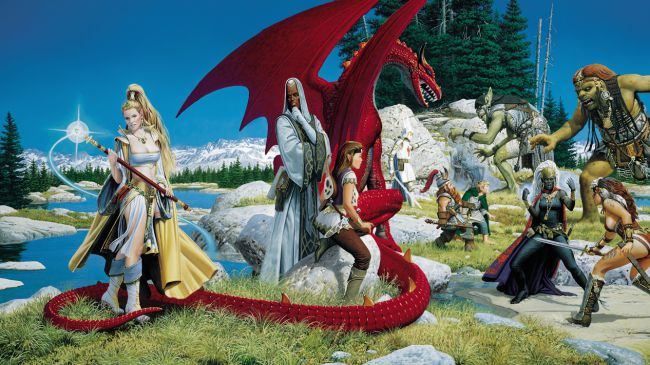

I've been a fan of Serious Sam since day one, and I was tickled pink when Serious Sam 3: BFE finally carried Croteam to the (relative) big time in 2011. (Was it really that long ago?) This week the studio finally confirmed the poorly-kept secret that Serious Sam 4 is in the works, and delivered unto it what is possibly the greatest subtitle of all time: Planet Badass. In a way, I'm actually concerned that it will be too ridiculous, which I know sounds a little strange in the context of Serious Sam. But it also sounds like exactly what I want: Giant enemies, hordes of galloping skeletal Kleer and guys who never stop screaming even though they don't have heads, and silly, stupid, Serious one-liners, all of it basted in bullets, bullets, bullets. And rockets.
�Planet Badass.� I am SO there.
Steven Messner: Fanfestivus
For a good portion of last week (and just two days this week�so it counts) I was in Reykjavik, Iceland for CCP Games' annual EVE Fanfest. It's a surreal time when nearly a thousand players from all over the globe fly to the home of CCP's main headquarters to drink, talk, and celebrate EVE Online. This was my third year, so the novelty has worn off, but I always leave with this renewed love for that weird little sandbox MMO. Because, despite what you may have heard, EVE Online is actually home to some of the nicest, most inclusive people I know. It's a great community to be a part of, and I love how that strikes such a wild contrast with the barbarous reputation that EVE Online has. And sure, these people will definitely kill you and take everything you have in-game. But if you ever meet them at Fanfest, they'll be the first to buy you a beer too. That's kind of awesome.

Samuel Roberts: Colony wars
It's nice seeing developers drop new games at this quiet time of year. Last week I got my first go at Introversion's new project, Order of Magnitude, a space colony game that's in a pretty early state right now. If you liked Surviving Mars, you might find the direction interesting, even if it�s a very different proposition. The hope is that the game can turn into a massive colony simulator where your colonies go to war over things like water supplies, and you�re doing your best to react to it.
Right now, the developers aren�t willing to commit to the game's future direction until they know where they want to take it, but after playing the tutorial, I feel like it's got a lot of potential. Hopefully Introversion's fans are enthusiastic about where it's going.
Tom Senior: Survey says
I have enjoyed thinking about RTS games this week. I need to get stuck into Northguard at some point, but this weekend I plan to get my fix with some classics. This normally means I play skirmish Company of Heroes and two games of Supreme Commander before my urge to conquer has been sated, but maybe I will go back further this time�maybe even as far as WarCraft 3 and Dark Omen.
To celebrate the genre, and to spur a bit of debate about where RTS games should go next, I set up a survey so that everyone can vote on. It�s the latest in a series of articles in which we try to imagine the perfect example of a genre. It�s quite frivolous, obviously, but it will be interesting to see where people come down on base building, and how long a typical RTS battle should last.

Tyler Wilde: Forever questing
Luke�s article about his return to vanilla EverQuest (there are some quality of life updates, as I understand it, but it�s basically 1999 vintage EQ) got me feeling extra nostalgic this week. I spent an entire summer pretty much only playing EQ, right after it launched and with all the idiosyncrasies of the time. Unlike Luke, it was when WoW released that I lost interest in MMOs, not the other way around. My favorite thing to do in EverQuest was create a non-human character and then try to walk all the way to the human city of Freeport at level one without dying, sometimes snagging loot left behind by higher-level characters on the way. I love that it didn�t care how weak and vulnerable I was�it just let me go out there and see the world, and be crushed by it sometimes.
Joe Donnelly: On the ball
In partnership with the UK's National Health Service, Football Manager 2018 will host an in-game mental health awareness campaign. By way of digital pitch-side advertising, NHS Leeds' Clinical Commissioning Group will see their Mindmate website featured in-game�whereby regional players (the ads are geo-targeted) can click through to the initiative's homepage.
As detailed in our news story here, the campaign will run till mid-May and is designed to both raise awareness and target "hard to reach" young men. I think it's a great idea and both Sports Interactive and NHS Leeds CCG deserve credit for their efforts. Football Manager 2018's in-game sponsors cover a wide range of retail and technology outlets, but also include the likes of videogames charity Special Effect and Prostate Cancer UK.
FM was also praised last year for its inclusion of openly gay players�despite the fact homosexuality in modern professional football/soccer remains heavily stigmatised. Long may it continue to use its platform to help combat misconstrued stereotypes.